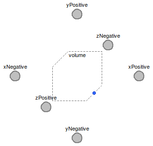

Table of Contents
- User's Guide
- Blocks
- Conditions
- Assemblies
- Regions
- Subregions
- Connectors
- Characteristics
- Units
- Quantities
- BaseClasses
Download
- Latest version (**Empty; please check back soon or contact kdavies4 at gmail.com.)

| Name | Description |
|---|---|
| EmptySubregion | Base model for multi-dimensional, multi-species storage, transport, and exchange |
| InitCapacitor | Methods of initializing a capacitor |
type InitCapacitor = enumeration(
None "No initialization",
SS "Steady state",
Amount "Amount of material",
Potential "Potential") "Methods of initializing a capacitor";

At least one component of translational momentum must be included. All of the components are included by default.
At least one pair of faces must be included. All of the faces are included by default.
This model should be extended to include the appropriate phases and reactions.
| Type | Name | Default | Description |
|---|---|---|---|
| Geometry | |||
| Length | L[Axis] | {U.cm,U.cm,U.cm} | Lengths (L) [l] |
| Assumptions | |||
| Axes with translational momentum included | |||
| Boolean | inclTransX | true | X |
| Boolean | inclTransY | true | Y |
| Boolean | inclTransZ | true | Z |
| Axes with faces included | |||
| Boolean | inclFacesX | true | X |
| Boolean | inclFacesY | true | Y |
| Boolean | inclFacesZ | true | Z |
| Type | Name | Description |
|---|---|---|
| FaceBus | xNegative | Negative face along the x axis |
| FaceBus | xPositive | Positive face along the x axis |
| FaceBus | yNegative | Negative face along the y axis |
| FaceBus | yPositive | Positive face along the y axis |
| FaceBus | zNegative | Negative face along the z axis |
| FaceBus | zPositive | Positive face along the z axis |
partial model EmptySubregion "Base model for multi-dimensional, multi-species storage, transport, and exchange" import FCSys.BaseClasses.Utilities.cartWrap; import FCSys.BaseClasses.Utilities.countTrue; import FCSys.BaseClasses.Utilities.enumerate; import FCSys.BaseClasses.Utilities.index; // extends FCSys.BaseClasses.Icons.Names.Top3; // Geometric parameters inner parameter Q.Length L[Axis](each min=Modelica.Constants.small) = {U.cm,U.cm, U.cm} "Lengths (L)"; final inner parameter Q.Area A[Axis]={L[cartWrap(axis + 1)]*L[cartWrap(axis + 2)] for axis in Axis} "Cross-sectional areas"; final inner parameter Q.Volume V=product(L) "Volume"; // Assumptions // ----------- // Included components of translational momentum parameter Boolean inclTransX=true "X"; parameter Boolean inclTransY=true "Y"; parameter Boolean inclTransZ=true "Z"; // // Included faces parameter Boolean inclFacesX=true "X"; parameter Boolean inclFacesY=true "Y"; parameter Boolean inclFacesZ=true "Z"; Connectors.FaceBus xNegative if inclFacesX "Negative face along the x axis"; Connectors.FaceBus xPositive if inclFacesX "Positive face along the x axis"; Connectors.FaceBus yNegative if inclFacesY "Negative face along the y axis"; Connectors.FaceBus yPositive if inclFacesY "Positive face along the y axis"; Connectors.FaceBus zNegative if inclFacesZ "Negative face along the z axis"; Connectors.FaceBus zPositive if inclFacesZ "Positive face along the z axis"; protected parameter Boolean hasSpecies "true, if any species are included"; final inner parameter Boolean inclTrans[Axis]={inclTransX,inclTransY, inclTransZ} "true, if each component of translational momentum is included"; final inner parameter Boolean inclFaces[Axis]={inclFacesX,inclFacesY, inclFacesZ} "true, if each pairs of faces is included"; final inner parameter Boolean inclRot[Axis]={inclFacesY and inclFacesZ, inclFacesZ and inclFacesX,inclFacesX and inclFacesY} "true, if each axis of rotation has all its tangential faces included"; final inner parameter Integer n_trans=countTrue(inclTrans) "Number of components of translational momentum"; final inner parameter Integer n_faces=countTrue(inclFaces) "Number of pairs of faces"; final inner parameter Integer cartTrans[n_trans]=index(inclTrans) "Cartesian-axis indices of the components of translational momentum"; final inner parameter Integer cartFaces[n_faces]=index(inclFaces) "Cartesian-axis indices of the pairs of faces"; final inner parameter Integer cartRot[:]=index(inclRot) "Cartesian-axis indices of the components of rotational momentum"; final inner parameter Integer transCart[Axis]=enumerate(inclTrans) "Translational-momentum-component indices of the Cartesian axes"; final inner parameter Integer facesCart[Axis]=enumerate(inclFaces) "Face-pair indices of the Cartesian axes"; Volume volume if hasSpecies "Model to establish a fixed total volume"; end EmptySubregion;